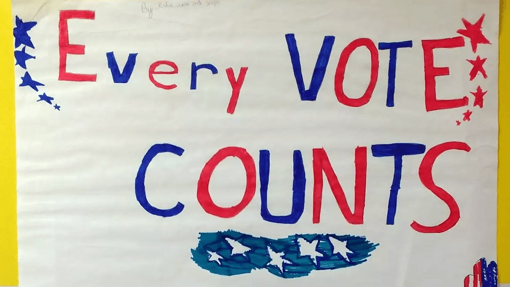

Voting Rights and Voter ID Laws
Grades 5-9, 90-120min
In the Voting Rights and Voter ID Laws lesson, students interview family members or neighbors about their experiences voting, and then analyze real footage from polling locations in neighborhoods around the country. Students then learn about the history of voting rights in the United States, drilling deep into the modern controversies around Voter ID laws. Part of this lesson leverages materials from a great PBS lesson plan.
Topics addressed
- How and why polling stations differ around the country
- Progression of voting rights throughout US history
- Voter ID laws
- Primary CT concept: decomposition. Voting rights and democracy are topics you can spend years digging into, but for the purposes of this single lesson, we use decomposition to identify one key component within the topic. It is not all-encompassing, but students should understand that we could similarly analyze other aspects of voting rights in isolation as well.
Students will be able to
- Describe the differences in voting experiences many Americans have depending on where they live
- Understand how voting laws have changed since the fifteenth amendment has passed, and how a right to vote didn’t always guarantee the ability to vote
- Evaluate the successes and failures of Voter ID laws, and describe the controversies around their purpose and impact
Materials
-
Slides:


-
Student work packet:


Prep
- The night before you kick off this lesson, your homework assignment should be the family member / neighbor interview on voting experience found on page one of the student work packet
- Familiarize yourself with the slide notes on the video clips and the answers to the literacy test questions
- Consider reading some of the articles (also in the slide notes) on the Voter ID laws, to help form your own opinion and to be better prepared to answer students’ questions
Suggested lesson breakdown
This lesson can be split across however many days you’d like – the Election Day clip analysis can stand on its own, for example. Rough timing ideas are presented below, but can easily be adjusted to better fit your schedule!
- 5min – Do Now
- 10-15min – review Do Now responses and students’ interview responses
- 25min – Election Day clips
- 20-30min – Voting rights history and literacy test questions
- 15-30min – Voting fraud and Voter ID laws
- 10min – Voting modernization
- 5min – Exit ticket
Washington State standards
-
WA.SS.5.1.4.1
Understands that civic participation involves being informed about how public issues are related to rights and responsibilities. -
WA.SS.5.1.1.2
Evaluates how a public issue is related to constitutional rights and the common good. -
WA.SS.8.1.1.2
Evaluates efforts to reduce discrepancies between key ideals and reality in the United States including how amendments to the Constitution have sought to extend rights to new groups. -
WA.SS.8.1.4.1
Analyzes how a position on an issue attempts to balance individual rights and the common good.